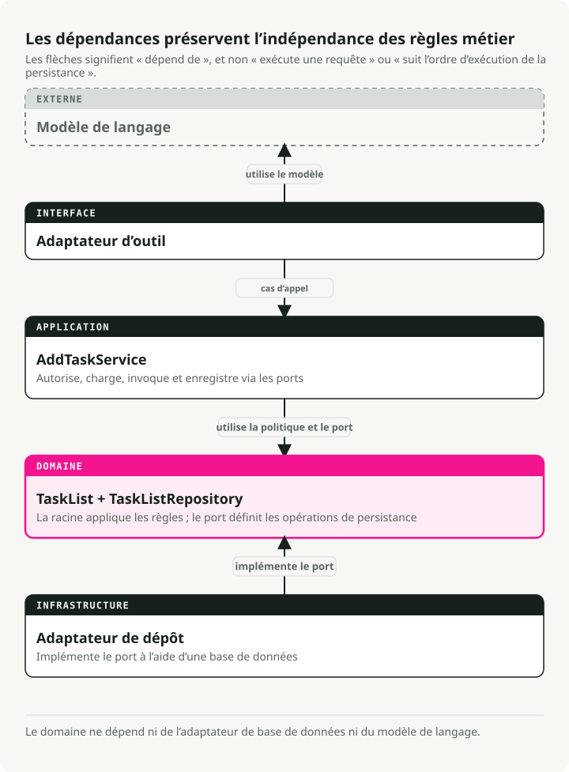
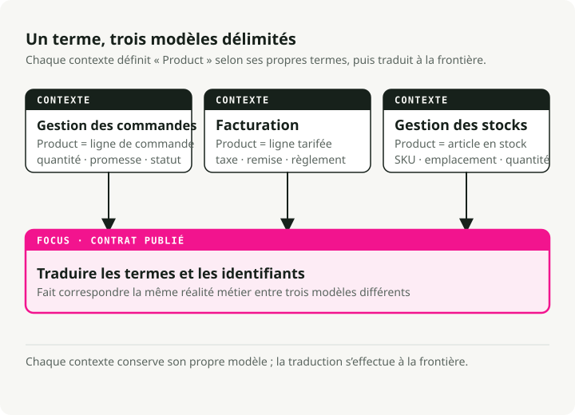
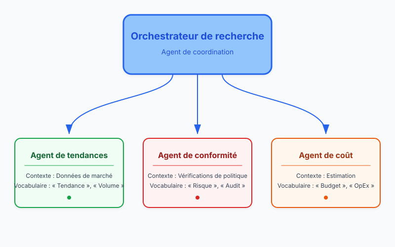
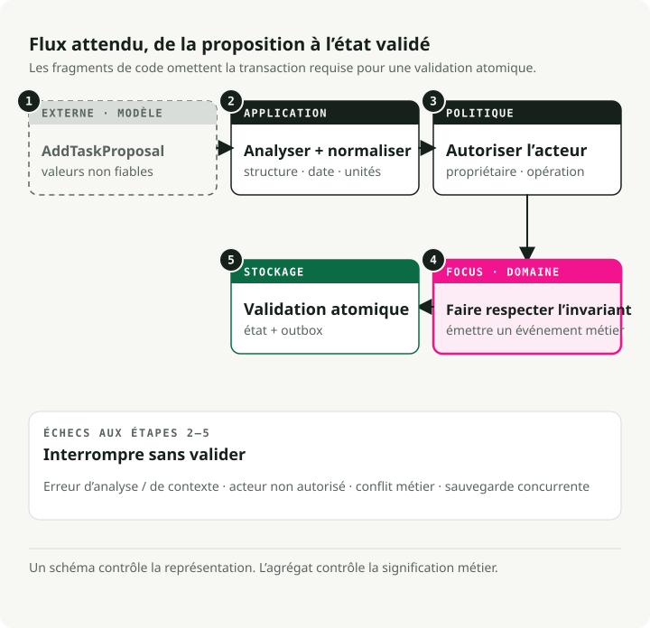
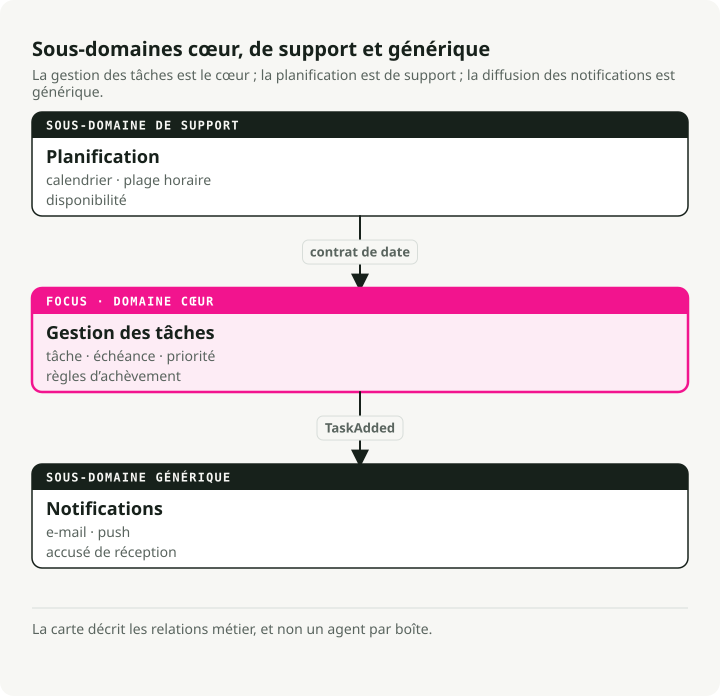

Traduction automatique
Cet article a été traduit automatiquement depuis la version originale en anglais.
Domain-Driven Design pour les agents IA : contextes bornés, outils et règles métier
TL;DR
Le domain-driven design (DDD) donne aux équipes d’agents IA un vocabulaire partagé et des frontières nettes entre les sous-systèmes. Utilisez-le lorsque vos prompts se sont éloignés du métier et que vos règles sont dispersées dans des templates.

Pourquoi le domain-driven design est important pour les agents IA
La plupart des projets d’agents n’échouent pas parce que le code est mauvais. Ils échouent parce que les personnes qui écrivent les prompts et celles qui possèdent réellement le processus métier ne parviennent pas à s’accorder sur le sens des choses. La conformité demande un « contrôle de politique » et récupère une méthode process_data(). Personne ne sait ce qu’elle fait, donc les exigences dérivent et le système se fige.
Le DDD corrige cela en plaçant le domaine métier au centre. Pas le schéma de base de données. Pas le template de prompt. Le vrai processus du monde réel que vous essayez de modéliser. Les effets pratiques :
- Langage partagé. Product, ops et engineering utilisent tous les mêmes mots. Quand la conformité dit « demande de remboursement », c’est ce qui apparaît dans votre code, vos prompts et votre documentation.
- Périmètre ciblé. Vous construisez ce qui compte : les workflows centraux et les règles réellement possédées par quelqu’un. Moins de code de glue qui casse quand les exigences changent.
- Adaptabilité. Quand les politiques évoluent, vous mettez à jour une tranche bien définie au lieu de chercher partout dans un monolithe.
C’est surtout important dans les domaines où les règles changent souvent : finance, santé, opérations réglementées. Le DDD vous donne une vraie chance de suivre le rythme.
Briques stratégiques
Le DDD est un ensemble de patterns plutôt qu’une idée unique. On le divise généralement en deux parties :
- Conception stratégique : la partie « vue d’ensemble ». Définir les frontières, les équipes et la manière dont les systèmes communiquent. C’est essentiel pour les systèmes multi-agents.
- Conception tactique : les patterns au niveau du code (Entities, Aggregates) qui gardent propre la logique interne de votre agent.
Les concepts ci-dessous sont ceux que vous utiliserez réellement au quotidien.
Langage omniprésent
Le vocabulaire partagé qui apparaît partout : réunions, documentation, prompts, noms de méthodes. Il n’y a pas de couche de traduction entre le « langage métier » et le « langage du code ».
Si la conformité dit « policy check », votre méthode est run_policy_check(), pas process_data(). Si les médecins disent « admit patient », vous écrivez admit_patient(), pas add_user().
class PatientRegistry:
def admit_patient(self, patient_id: str) -> None:
"""Admit a patient to the registry - term used by medical staff."""
...
Quand le langage du code correspond au langage utilisé dans la salle, les changements d’exigences apparaissent comme des renommages évidents à un seul endroit. Vous arrêtez de débattre de ce que process_data était censé faire.
Contextes bornés
Les grands systèmes ont besoin de frontières explicites. Pourquoi ? Parce qu’un même mot signifie des choses différentes selon les parties du métier.
Prenez « product » dans l’e-commerce. Dans le contexte Inventory, un product est un article de catalogue avec des SKU et des niveaux de stock. Dans le contexte Billing, c’est une ligne de facturation avec des règles de tarification et des calculs de taxes. Dans Order Management, c’est une quantité et une promesse de livraison.
Les contextes bornés permettent à chaque sous-domaine d’avoir sa propre définition sans conflit. Des couches de traduction ou des interfaces les relient lorsqu’ils doivent communiquer.

Cela garde chaque modèle de taille réduite et évite un objet « product » géant qui doit satisfaire trois équipes à la fois.
Entités et objets-valeur
Ce sont les briques de base de votre modèle de domaine.
Les entités ont une identité qui persiste dans le temps. Une Task avec l’ID 123 est la même tâche même si vous changez sa description, son statut ou sa date d’échéance. Deux entités sont égales si elles ont le même ID, indépendamment de leurs attributs.
from pydantic import BaseModel
class SupportTicket(BaseModel):
ticket_id: str # This is the identity
customer: str
issue: str
status: str = "OPEN"
def close(self) -> None:
if self.status != "OPEN":
raise ValueError("Ticket already closed")
self.status = "CLOSED"
Les objets-valeur n’ont pas d’identité. Ils sont entièrement définis par leurs attributs. Deux objets TimeSlot avec les mêmes heures de début et de fin sont interchangeables. Les objets-valeur sont immuables ; au lieu d’en modifier un, vous en créez un nouveau.
from pydantic import BaseModel
class TimeSlot(BaseModel):
start: str # e.g., "2025-10-18 09:00"
end: str # e.g., "2025-10-18 10:00"
@property
def duration(self) -> int:
# Compute duration from start to end
...
Utilisez des entités pour les choses qui ont un cycle de vie (Order, User, AgentSession). Utilisez des objets-valeur pour les descriptions et les mesures (EmailAddress, Priority, Location).
Agrégats
Les agrégats sont des groupes d’entités et d’objets-valeur liés, traités comme une seule unité. À l’intérieur d’un agrégat, les règles métier doivent toujours rester vraies. C’est tout l’intérêt.
Chaque agrégat a une racine d’agrégat, l’entité qui contrôle l’accès à tout ce qu’il contient. Vous voulez modifier quelque chose dans l’agrégat ? Passez par la racine. La racine impose les invariants pour empêcher l’agrégat d’entrer dans un état invalide.
from datetime import date
from pydantic import BaseModel, Field
class Task(BaseModel):
id: str
description: str
completed: bool = False
class Plan(BaseModel): # This is the aggregate root
id: str
tasks: list[Task] = Field(default_factory=list)
def add_task(self, task: Task) -> None:
# Business rule enforced here: no duplicate task IDs
if any(t.id == task.id for t in self.tasks):
raise ValueError("Task ID already exists")
self.tasks.append(task)
Le code externe ne touche jamais directement la liste tasks. Il appelle toujours add_task(). C’est ce qui garantit que la règle « pas d’ID dupliqués » ne peut pas être violée. Quand vous enregistrez dans une base de données, vous enregistrez généralement l’agrégat complet d’un seul coup.
Repositories
Les repositories masquent la couche de persistance. Du point de vue du domaine, vous appelez save(plan) et get(plan_id). Le fait que ces appels finissent par toucher Postgres ou Redis est le problème de quelqu’un d’autre.
Il y a deux gains ici. Les tests peuvent utiliser un repository en mémoire au lieu de mocker des appels base de données. Et lorsque vous remplacerez SQLite par quelque chose de plus robuste, les règles métier ne bougeront pas.
from abc import ABC, abstractmethod
from pydantic import BaseModel, Field
class Task(BaseModel):
id: str
description: str
completed: bool = False
class Plan(BaseModel):
id: str
tasks: list[Task] = Field(default_factory=list)
class PlanRepository(ABC):
"""Domain layer defines the interface."""
@abstractmethod
def save(self, plan: Plan) -> None:
...
@abstractmethod
def get(self, plan_id: str) -> Plan | None:
...
class InMemoryPlanRepository(PlanRepository):
"""Infrastructure layer provides the implementation."""
def __init__(self) -> None:
self.storage: dict[str, Plan] = {}
def save(self, plan: Plan) -> None:
self.storage[plan.id] = plan
def get(self, plan_id: str) -> Plan | None:
return self.storage.get(plan_id)
Votre code de domaine ne connaît que PlanRepository (l’interface). La couche d’infrastructure branche l’implémentation réelle.
Événements de domaine
Les événements de domaine capturent des faits importants qui se sont produits dans votre système. Le nommage est au passé (OrderPlaced, TaskCompleted, PaymentFailed) parce qu’ils décrivent des faits, pas des commandes.
Les événements rendent explicites des effets de bord qui, sinon, resteraient implicites. Au lieu qu’un module en appelle directement un autre lorsqu’un événement se produit, le domaine émet un événement. D’autres parties du système s’y abonnent et réagissent indépendamment.
from datetime import datetime
from pydantic import BaseModel
class TaskCompleted(BaseModel):
task_id: str
completed_at: datetime
Quand une tâche se termine, vous émettez TaskCompleted. Un service de notification peut écouter cet événement et envoyer un email. Un service de reporting peut l’enregistrer pour l’analytics. Le point important : l’agrégat de tâche n’a pas besoin de connaître les emails ni l’analytics. Il annonce simplement ce qui s’est passé.
C’est ainsi que la communication entre contextes reste découplée. Cela s’adapte aussi naturellement aux systèmes multi-agents, puisque les agents réagissent déjà les uns aux autres via des événements.
Traduire le DDD en architectures d’agents
Les vrais systèmes d’agents ont des workflows à plusieurs étapes, des sorties LLM incorrectes une partie du temps, et des exigences qui changent chaque trimestre. Les patterns du DDD correspondent justement bien à ces problèmes.
Les contextes bornés deviennent des agents ou des compétences
Chaque agent (ou capacité majeure) est un contexte borné. Un orchestrateur de recherche peut coordonner trois agents spécialisés :
- Trends Agent — collecte des données de marché avec son propre vocabulaire et ses propres outils
- Compliance Agent — exécute des contrôles de politique avec une terminologie réglementaire
- Cost Agent — estime les dépenses avec des règles propres à la finance
Chacun a son propre modèle, sa propre terminologie et ses propres invariants. Ils communiquent via des interfaces ou des événements bien définis.

Même dans un système mono-agent, vous pouvez définir des contextes internes. Un module de planification et un module d’exécution, chacun avec son propre modèle de domaine.
Les prompts respectent le langage omniprésent
Utilisez les termes du domaine dans les system prompts, les descriptions d’outils et les signatures de fonctions. Si les experts conformité disent « policy check », cette expression exacte doit apparaître dans vos prompts et dans votre code. L’avantage est très concret : quand la trace d’un agent montre run_policy_check, l’équipe conformité peut la lire sans traducteur.
L’état devient des entités explicites
Les LLM sont souvent stateless, mais les vrais agents suivent beaucoup d’état : sessions de conversation, objectifs, résultats intermédiaires, sorties d’outils. Modélisez-les comme des entités ou des objets-valeur :
- entité
ConversationSessionavec ID et historique des messages - entité
Taskreprésentant des unités de travail - objet-valeur
ToolOutputpour des résultats immuables
Une fois ces objets explicités, vous pouvez leur attacher de la validation et des règles métier. Une entité Task peut refuser d’être terminée tant que ses dépendances ne sont pas terminées, sans que cette règle vive dans trois templates de prompt différents.
Les agrégats expriment les plans des agents
Une racine d’agrégat Plan gouverne la liste des tâches et impose les limites qui importent au métier. Quand un LLM propose d’ajouter 50 tâches alors que votre politique en autorise 10, l’agrégat refuse les tâches en trop. Quand il suggère du travail en double, l’agrégat le rejette aussi. Le modèle peut être enthousiaste ; le domaine reste sain.
Les événements de domaine pilotent l’orchestration
Les agents émettent des événements comme ResearchCompleted, ThresholdExceeded ou PolicyViolationDetected. D’autres agents ou services s’y abonnent et réagissent. Rien n’est câblé en dur, ce qui rend l’ajout d’un nouvel écouteur (ou d’un nouvel agent) peu coûteux.
Les règles métier encadrent les actions de l’IA
Les sorties LLM passent par des services de domaine ou des méthodes d’entité plutôt que d’aller directement dans la base de données. Si un modèle propose un remboursement au-delà des limites de la politique, votre RefundRequest le valide et le rejette. Le LLM peut improviser ; les règles métier ont le dernier mot.
La couche Anti-Corruption (ACL)
Un LLM est probabiliste et se trompe parfois de manière surprenante. Votre modèle de domaine doit rester déterministe. Les deux ne peuvent pas se rencontrer directement.
C’est le rôle de l’Anti-Corruption Layer (ACL).

L’ACL se place entre le modèle et le domaine. Elle traduit la sortie brute du LLM vers les types stricts attendus par votre domaine.
- Ingest le texte brut ou le JSON provenant du LLM.
- Validate la structure et les types avec des modèles Pydantic.
- Sanitize les valeurs (pas de prix négatifs, pas de transactions datées dans le futur, etc.).
- Translate les DTO (Data Transfer Objects) en entités de domaine.
Si la validation échoue, l’ACL rejette les données et renvoie souvent l’erreur au LLM pour qu’il réessaie. L’idée est simple : seules des données valides touchent votre logique métier centrale.
Exemple : un assistant de tâches modélisé avec DDD
Nous allons construire un assistant personnel de tâches qui gère des requêtes comme « Rappelle-moi d’acheter du lait demain » ou « Qu’y a-t-il sur ma to-do list ? ». Cette présentation applique les briques DDD ci-dessus, une par une.
1. Cartographier les contextes
Commencez par découper le problème en sous-domaines :
- Task Management — gestion des éléments de to-do et des rappels (domaine cœur)
- Scheduling — événements de calendrier et réunions
- Notifications — envoi d’alertes et d’emails
Nous allons d’abord nous concentrer sur Task Management. Les autres pourront évoluer comme contextes bornés séparés ou comme agents compagnons.

2. Parler le même langage
Choisissez le vocabulaire avec les personnes qui possèdent réellement le processus (ou utilisez le bon sens pour une app personnelle) : « tâche », « échéance », « rappel », « priorité ». Utilisez ensuite exactement ces termes dans les templates de prompt, les noms de méthodes et les libellés UI. Il n’y a pas de traduction « métier » séparée.
3. Capturer entités, objets-valeur et événements
Modélisez maintenant les concepts centraux :
- Entité :
Taskavec une identité (id) et un état mutable (completed) - Objet-valeur : enum
Priority(immuable, défini par sa valeur) - Événement de domaine :
TaskCompletedEventpour signaler qu’un travail est terminé
from datetime import datetime, date, timezone
from enum import Enum
from pydantic import BaseModel, Field
class Priority(Enum):
"""Value object: priority is defined by its value alone."""
LOW = 1
NORMAL = 2
HIGH = 3
class TaskCompletedEvent(BaseModel):
"""Domain event: announces a task was completed."""
task_id: str
time: datetime
class Task(BaseModel):
"""Entity: identity persists even as attributes change."""
id: str
description: str
created_at: datetime = Field(default_factory=lambda: datetime.now(timezone.utc))
due_date: date | None = None
priority: Priority = Priority.NORMAL
completed: bool = False
def mark_completed(self) -> TaskCompletedEvent:
"""Business rule: can't complete an already-completed task."""
if self.completed:
raise ValueError("Task is already completed.")
self.completed = True
return TaskCompletedEvent(task_id=self.id, time=datetime.now(timezone.utc))
La règle métier (vous ne pouvez pas terminer une tâche déjà terminée) vit dans la méthode de l’entité, pas dans un template de prompt.
4. Façonner l’agrégat
Le TaskList est notre racine d’agrégat. Il contient plusieurs entités Task et impose des règles de cohérence entre elles. Toutes les modifications passent par les méthodes de la racine.
from datetime import date
from pydantic import BaseModel, Field
class Task(BaseModel):
id: str
description: str
due_date: date | None = None
completed: bool = False
class TaskList(BaseModel):
"""Aggregate root: enforces invariants across all tasks."""
owner: str
tasks: list[Task] = Field(default_factory=list)
def add_task(self, task: Task) -> None:
"""Business rule: no duplicate tasks on the same day."""
if any(
existing.description == task.description
and existing.due_date == task.due_date
for existing in self.tasks
):
raise ValueError("A similar task on that date already exists.")
self.tasks.append(task)
def get_pending(self) -> list[Task]:
"""Query helper: find tasks that aren't done yet."""
return [task for task in self.tasks if not task.completed]
TaskList.model_rebuild() # Resolve forward references for Pydantic.
Le code externe ne touche jamais directement tasks. Il passe toujours par add_task() ou une autre méthode de la racine, ce qui garantit réellement la règle « pas de doublons ».
5. Encapsuler la persistance dans un repository
Le repository abstrait le stockage. La couche domaine ne sait pas si les tâches vivent en mémoire ou dans Postgres.
from pydantic import BaseModel, Field
class Task(BaseModel):
id: str
description: str
completed: bool = False
class TaskList(BaseModel):
owner: str
tasks: list[Task] = Field(default_factory=list)
TaskList.model_rebuild() # Resolve forward references for Pydantic.
class TaskRepository:
"""Abstracts task storage - in-memory implementation for simplicity."""
def __init__(self) -> None:
self._data: dict[str, TaskList] = {}
def get_task_list(self, owner: str) -> TaskList:
"""Retrieve a user's task list, or create a new empty one."""
return self._data.get(owner, TaskList(owner=owner))
def save_task_list(self, task_list: TaskList) -> None:
"""Persist changes to the task list."""
self._data[task_list.owner] = task_list
En production, vous remplaceriez cela par une implémentation adossée à une base de données (avec SQLAlchemy ou Postgres directement) sans toucher au code du domaine.
6. Exécuter le flux
Quand un utilisateur fait une requête, le flux ressemble à ceci :
from datetime import date, timedelta
from uuid import uuid4
from pydantic import BaseModel, Field
class Task(BaseModel):
id: str
description: str
due_date: date | None = None
completed: bool = False
class TaskList(BaseModel):
owner: str
tasks: list[Task] = Field(default_factory=list)
def add_task(self, task: Task) -> None:
if any(
existing.description == task.description
and existing.due_date == task.due_date
for existing in self.tasks
):
raise ValueError("A similar task on that date already exists.")
self.tasks.append(task)
class TaskRepository:
def __init__(self) -> None:
self._data: dict[str, TaskList] = {}
def get_task_list(self, owner: str) -> TaskList:
return self._data.get(owner, TaskList(owner=owner))
def save_task_list(self, task_list: TaskList) -> None:
self._data[task_list.owner] = task_list
TaskList.model_rebuild() # Resolve forward references for Pydantic.
# User says: "Remind me to buy milk tomorrow"
# (In reality, an LLM would parse this into structured data)
user_input = "Remind me to buy milk tomorrow"
intent = "add_task"
# Initialize repository
repo = TaskRepository()
if intent == "add_task":
# 1. Load the user's task list
task_list = repo.get_task_list(owner="User123")
# 2. Create a new task entity
task = Task(
id=str(uuid4()),
description="buy milk",
due_date=date.today() + timedelta(days=1),
)
# 3. Domain layer enforces business rules
try:
task_list.add_task(task)
repo.save_task_list(task_list)
print(f"Task '{task.description}' added for {task.due_date}.")
except Exception as exc:
print(f"Sorry, I couldn't add that task: {exc}")
Les couches restent séparées :
- Couche LLM : analyse le langage naturel en données structurées (intention + paramètres)
- Couche domaine : impose les règles métier via des méthodes d’entité
- Couche repository : gère la persistance sans fuiter dans la logique de domaine
Le LLM peut être créatif dans l’analyse, mais c’est le domaine qui décide de ce qui est cohérent. S’il essaie d’ajouter une tâche en double, la racine d’agrégat la rejette. Vous n’avez pas besoin d’une clause spéciale dans votre prompt pour ce cas.
Outillage pour donner vie au modèle
Le DDD ne nécessite pas de frameworks particuliers. Mais quelques outils rendent l’implémentation plus fluide, surtout pour les agents IA.
FastAPI
FastAPI s’aligne proprement sur les couches DDD. Utilisez des routers pour séparer les contextes bornés (/tasks, /schedule), des modèles Pydantic pour valider les requêtes et les réponses, et l’injection de dépendances pour brancher les repositories.
Structurez votre projet par couches :
project/
├── domain/ # Pure business logic (entities, aggregates, value objects)
├── application/ # Use cases and command handlers
├── infrastructure/ # Repositories, databases, external APIs
└── interface/ # FastAPI routers and HTTP contracts
Cette stratification (parfois appelée « onion architecture ») évite que les changements se propagent dans tout le code. Remplacer la base de données signifie toucher infrastructure/ et rien d’autre. Changer l’UI signifie toucher interface/ et rien d’autre.
Pydantic et Pydantic AI
Pydantic impose les invariants et valide les données à l’exécution. Utilisez-le pour les entités, les objets-valeur, et surtout pour valider les sorties LLM.
Pydantic AI va plus loin : il impose que les réponses LLM correspondent à vos schémas de domaine. Définissez un AddTaskCommand avec des champs obligatoires, et Pydantic AI valide la sortie JSON du modèle avant que votre code n’y touche.
Instructor est une autre option ici. Il patch les clients OpenAI (et d’autres) pour renvoyer directement des modèles Pydantic, ce qui est une manière légère d’implémenter une Anti-Corruption Layer.
Bibliothèques d’aide DDD
- DDDesign — fournit des classes de base pour les entités, les repositories et les objets-valeur construites sur Pydantic
- Protean — un framework complet pour DDD, CQRS et event sourcing si vous voulez quelque chose avec beaucoup de fonctionnalités prêtes à l’emploi
La plupart des développeurs Python les ignorent et utilisent des classes classiques avec Pydantic, mais elles valent le détour pour les grands projets.
Outils event-driven
Pour les événements de domaine, envisagez :
- blinker — dispatcher d’événements léger en processus
- redis-py Pub/Sub ou RabbitMQ — pour des événements distribués entre services ou agents
- asyncio event patterns — si vous êtes déjà en async
Les événements sont essentiels pour l’orchestration multi-agents. Un agent émet ResearchCompleted ; les autres s’abonnent et réagissent. Aucun agent n’a besoin de savoir qui écoute.
Frameworks d’agents
LangChain, LangGraph, Haystack, Semantic Kernel, LlamaIndex, AutoGen, Google ADK, smolagents et CrewAI fournissent tous une structure pour les workflows d’agents. Utilisez-les dans votre couche application ou infrastructure, et encapsulez-les derrière des interfaces possédées par votre couche domaine. Changer de framework devient alors une modification contenue.
Tests
Un gain pratique du DDD : la couche domaine se teste sans faire tourner toute la stack.
- PyTest pour les tests unitaires sur les entités et les agrégats
- Fake repositories (en mémoire) pour les tests d’intégration
- LLM stubs qui renvoient des sorties prédéterminées
Votre code de domaine ne devrait jamais nécessiter un LLM réel pour exécuter ses tests. Le LLM est un détail d’implémentation. Les tests valident les règles métier.
Checklist de démarrage
Un ordre d’exécution pratique quand vous démarrez un nouveau projet d’agent :
- Interrogez les experts métier. Rédigez le langage omniprésent. Mettez-le par écrit.
- Cartographiez les contextes bornés. Dessinez les sous-domaines et marquez les endroits où ils doivent communiquer entre eux. Commencez par un contexte cœur.
- Modélisez les entités et les objets-valeur. Quelles choses ont une identité ? Quelles choses ne sont que des valeurs ? Intégrez les invariants dans leurs méthodes.
- Définissez les racines d’agrégat. Regroupez les entités liées sous une seule racine qui impose les règles de cohérence.
- Créez les interfaces de repository. N’implémentez pas encore le stockage. Définissez simplement
save()etget(). Le domaine reste ignorant de l’endroit où vivent les données. - Émettez des événements de domaine. Pour les changements significatifs (commande passée, tâche terminée), levez des événements. Branchez les listeners plus tard selon le besoin.
- Encapsulez les sorties LLM dans des schémas. Utilisez des modèles Pydantic pour imposer des contrats. Le texte libre ne doit pas fuiter dans votre domaine.
- Ajoutez l’orchestration. Construisez des services applicatifs qui coordonnent les agents via des commandes structurées ou des événements.
La règle qui compte vraiment : commencez par le domaine, pas par la stack technique. Comprenez d’abord le problème métier. Modélisez-le explicitement. Ensuite, apportez les outils IA au service de ce modèle.